Съедобные и условносъедобные грибы
 Белый гриб
Белый гриб
Многие определители для грибниковлюбителей начинаются с белого гриба – общепризнанного царя грибов – не будем же нарушать традицию. Ученые отмечают, что некоторые грибы превосходят белый и по питательным, и по лечебным свойствам, но тем не менее, мечтой каждого грибника остается найти именно белый гриб.
Это крупный гриб, его шляпка достигает 25– _0 см в диаметре. Растет в березовых, еловых, сосновых и дубовых лесах, но только в старых. В лесу моложе 50 лет белые грибы искать бесполезно. Белый гриб встречается и одиночно, но чаще группами, поэтому, найдя один гриб, нужно внимательно посмотреть вокруг – поблизости наверняка растет еще несколько. Белые грибы растут на изреженных местах, теплых и хорошо освещенных, на опушках, полянах, лесных прогалинах, нередко там, где много лесных муравейников. Лучшее время для сбора белых грибов, когда они появляются массово – время колошения злаков, хотя отдельные грибы можно встретить до поздней осени. По месту произрастания различаются четыре разновидности белого гриба – березовый, еловый, сосновый и дубовый.
Березовый белый гриб можно узнать по светлобурой или желтоватобурой шляпке и короткой клубневидной ножке. Растет в березовых лесах с начала июля до середины октября.
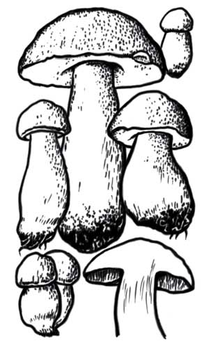
Белый гриб, форма еловая.
Еловый белый гриб имеет бурую, красноватобурую или каштановобурую шляпку и длинную ножку.
Растет в еловых лесах со второй половины июля до конца августа.
Сосновый белый гриб (боровик) имеет темнобурую с красноватым оттенком шляпку и короткую толстую ножку. Растет в сосновых лесах с середины июня до середины октября.
Дубовый белый гриб имеет сероватобурую шляпку и длинную ножку, а также более рыхлую мякоть, чем предыдущие разновидности. Растет в дубравах с начала июля до начала октября.
Шляпка сухая, гладкая, у молодого белого гриба шаровидная, с возрастом становится полушаровидной, иногда плоской. Нижняя трубчатая часть шляпки сначала белая, затем желтая или желтозеленоватая, с мелкими округлыми порами, занимает от одной до двух третей толщины шляпки. Мякоть белая, плотная, чуть сладковатая на вкус, не изменяющая цвет на изломе или разрезе, с приятным грибным запахом.
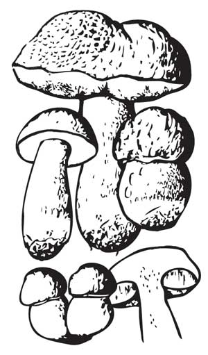
Белый гриб, форма сетчатая.
Ножка молодого белого гриба клубневидная, плотная, белая, на разрезе не выделяет сок и не чернеет. С возрастом она удлиняется и становится грушевидной или цилиндрической с булавовидным вздутием внизу, на ней заметен мелкий белый сетчатый узор.
Это съедобный гриб первой категории, очень полезен, питателен, с превосходным вкусом. Называется белым, потому что не чернеет на разрезе и при сушке. Используется для варки и жарки, для маринования, сушки и соления. При сушке сохраняет цвет и аромат.
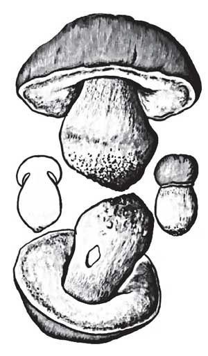
Боровик королевский.
Белый гриб обладает стимулирующими и антибиотическими свойствами, особенно его сосновая разновидность – боровик. Из боровика получают герницин, применяющийся при стенокардии и сердечной недостаточности. Имеются также данные, что в белом грибе содержатся противоопухолевые вещества.
Дубовик обыкновенный
Растет во влажных лиственных лесах, на склонах заросших лесом оврагов. Встречается с июля по сентябрь, редко и понемногу, хотя в отдельные сезоны может появляться в заметных количествах в течение всей второй половины лета.
По форме дубовик очень похож на белый гриб. Он имеет желтоватокоричневую, сероватозеленоватую или горчичного цвета шляпку. Трубчатый слой в нижней части шляпки краснокоричневый, на разрезе зеленоватый, от прикосновения синеет.
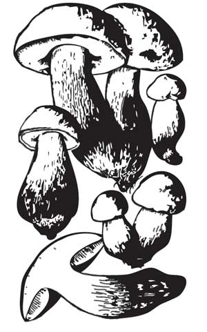
Дубовик обыкновенный.
Мякоть лимонножелтая, на разрезе быстро и сильно синеющая.
Ножка толстая, плотная, клубневидная, желтоватая или красноватая с краснобурым сетчатым рисунком, до 15 см длины.
Это съедобный гриб второй категории, используется в свежем, сушеном, маринованном виде. Блюда из свежего дубовика ароматны и приобретают замечательный золотистокоричневый цвет.
Каштановый гриб
Редко встречающийся гриб, относится к полубелым. Похож на белый, растет на светлых, разреженных участках широколиственных лесов, на песчаных почвах в конце августа – начале сентября.
По сравнению с белым каштановый гриб невелик, диаметр его шляпки не превышает 4–10 см. Шляпка плосковыпуклая, иногда с загнутыми вверх краями, гладкая, сухая, красноватобурого или каштанового цвета. Мякоть плотная, белая, на разрезе не меняет цвет, на вкус слегка горчит. Трубчатый слой мелкопористый, белый или желтоватокремовый. Ножка цилиндрическая, гладкая, красноватобурая, изнутри полая.
Съедобен, второй категории, используется жареным и вареным, а также для сушки и маринования.
Полубелый гриб
Растет в лиственных лесах, преимущественно в дубравах. Встречается одиночно или небольшими группами в августе – сентябре.
Шляпка до 15–20 см в диаметре, у молодого гриба выпуклая, позднее плоская, беловатокоричневая, сероватокоричневая или желтоватобурая, иногда растрескивающаяся. Мякоть толстая, бледножелтоватая, у старого гриба с заметным запахом карболки.
Ножка до 10 см длины и до 5 см толщины, клубневидновздутая, желтая, вверху буроватокрасноватая, волокнистая.
Съедобен, второй категории, используется жареным и вареным, а также для сушки и маринования.
Подосиновик
Это один из самых известных и распространенных съедобных грибов. Растет преимущественно в молодых осинниках и смешанных лесах с примесью осины, может встречаться в молодых березняках. Плодоносит со второй половины июня до начала сентября, обильно, нередко большими колониями.
У подосиновика много разновидностей, он произрастает совместно с различными древесными породами. Наиболее известны подосиновик красный, желтобурый, белый.
Подосиновик красный (красноголовик) встречается под молодыми деревцами и в лиственном мелколесье, в осиновых зарослях, на выкошенных полянах и вдоль лесных дорог. Имеет мясистую шляпку до 20–30 см в диаметре, темнокрасную или кирпичнокрасную, войлочную или голую, сухую. У молодого гриба шляпка полушаровидная, затем выпуклая. Нижняя поверхность шляпки мелкопористая, белая, затем становится серой или серокоричневой. Ножка высокая, цилиндрическая, утолщенная книзу, слегка волокнистая, беловатосероватая, покрытая серыми или коричневыми чешуйками. Мякоть на изломе быстро темнеет и становится фиолетовой или черной.
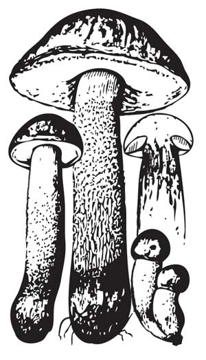
Подосиновик красный.
Подосиновик желтобурый встречается в сухих смешанных лесах, березовоосиновых и березовоеловых. Шляпка выпуклая, затем подушковидная, желтая, оранжевая или буроватожелтая. Трубчатый слой мелкопористый, белый, затем грязнобелый. Ножка плотная, коренастая, утолщенная книзу, белая с черными чешуйками, растет быстрее шляпки. Мякоть белая, крепкая, на изломе розовеет, затем синеет до черноты.
Подосиновик белый встречается во влажных сосновых лесах с примесью ели и лиственных деревьев, в тенистых высокоствольных осинниках. Шляпка молодого гриба полушаровидная, затем выпуклая, подушковидная, войлочная или голая, сухая, сероватого или белого цвета. Мякоть ножки плотная, волокнистая, на изломе быстро синеет и становится фиолетовой или черной.
Это съедобный гриб второй категории. Используется вареным и жареным, а также для сушки и маринования. При сушке чернеет.
Подберезовик
Подберезовик, березовик, черныш, подгреб, черный гриб, серый гриб, колосовик, обабок, бабка, подбабок – уже по такому изобилию названий можно судить о распространении этого гриба. Он растет повсюду, где есть береза, в лиственных и смешанных лесах, его можно встретить с июня по октябрь. Это один из самых вкусных трубчатых грибов, он быстро растет и быстро стареет – за несколько дней его шляпка делается дряблой, а ножка волокнистой.
Этот гриб растет на различных почвах и в различных типах лесов, но всегда предпочитает светлые, разреженные места. Его нужно искать на опушках, обочинах, полянах, в оврагах, вдоль лесополос. Шляпка подберезовика до 10–20 см в диаметре, гладкая, сухая, с тонкой, плохо отделяющейся кожицей, вначале полушаровидная, затем выпуклая, различных оттенков коричневого цвета – от светлых до очень темных, почти черных. Ножка длинная, довольно тонкая, серая, волокнистая, покрытая коричневыми или черными чешуйками, легко отделяется от шляпки. У нас встречается около двенадцати видов подберезовика, из них наиболее известны три – обыкновенный, болотный и розовеющий.
Подберезовик обыкновенный – это самый крупный и вкусный из подберезовиков. Шляпка серобурая или бурокоричневая, иногда почти до черноты. Трубчатая часть сначала белая, затем сероватобелая, занимает около половины толщины шляпки. Ножка длинная, белая, покрытая черными чешуйками.
Подберезовик розовеющий похож на обыкновенный, но его белая мякоть на изломе розовеет, а на шляпке нередко бывают светлые участки в виде бесформенных размытых пятен. Растет на более влажных местах, обычно на сырых участках березовых рощ.
Обе разновидности относятся к съедобным грибам второй категории, используются в вареном, жареном, сушеном и маринованном виде. При сушке чернеют и частично теряют вкусовые качества.
Подберезовик болотный встречается на болотах, поросших березой. Он мельче предыдущих разновидностей, его шляпка светлее – буроватосерого или бледнокоричневого цвета. Трубчатая часть шляпки может достигать двух третей ее толщины. Ножка тонкая, длинная, серобелая, со слабо выраженными чешуйками. Мякоть белая, рыхлая, водянистая, очень раскисает во время приготовления.
Съедобен, относится к грибам третьей категории, используется в пищу так же, как и прочие подберезовики.
Козляк
Имеет и другие местные названия – болотовик, подорешник, коровик, моховик, бычий масленок. Это связано с тем, что домашний скот любит эти грибы. Козляк растет по окраинам сырых, заросших сосной сфагновых болот, во влажных сосновых лесах, встречается группами или одиночно с июня по ноябрь.
Шляпка до 10–12 см в диаметре, плосковыпуклая, гладкая, истончающаяся к краю, желтобурая или рыжеватая, нередко неправильной формы. Трубчатый слой буроватожелтый, не отделяется от шляпки, с крупными неровными порами, напоминающими губку. Мякоть беловатожелтоватая, на разрезе слегка краснеет. Ножка до 10 см длины и до 2 см толщины, одного цвета со шляпкой или чуть светлее, нередко искривленная в нижней части.
Съедобен, четвертой категории, используется жареным и вареным, а также для сушки и маринования. Козляк обладает сильными антибиотическими свойствами.
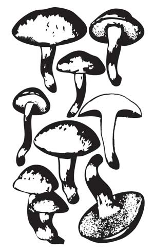
Козляк, решетник.
Польский (панский) гриб
Относится к моховикам, растет в хвойных лесах одиночно и группами с июня до ноября. Больше известен и ценится в Западной Европе, свое название получил, вероятно, от того, что в прошлом ввозился туда из Польши.
Шляпка до 15 см в диаметре, у молодого гриба выпуклая, затем плоская, красноватобурая, каштановая или шоколаднокоричневая, сухая, бархатистая, в сырую погоду скользкая. Трубчатый слой беловатый, затем желтоватый, при надавливании синеет. Мякоть крепкая, белая или желтоватая, на разрезе синеет.
Ножка до 8–12 см длины, цилиндрическая или немного вздутая, расширяющаяся к основанию, слегка волокнистая, буроватая или светлокоричневая.
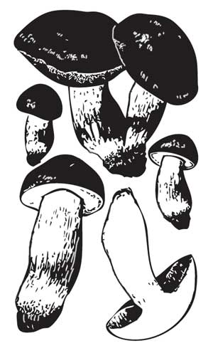
Польский гриб.
Съедобен, второй категории, используется жареным и вареным, а также для сушки и маринования.
Моховик желтобурый
Широко распространен, встречается часто и обильно, одиночно и группами с июня по октябрь. Растет в сосновых лесах на песчаных и торфянистопесчаных почвах, в сухие годы – на кочках и по краю заболоченных сосняков.
Шляпка до 10 см в диаметре, выпуклая, иногда плоская, темножелтая или охристобурая, бархатистая, в сырую погоду слизистая, с плохо отделяющейся кожицей. Трубчатый слой у молодого гриба тускложелтый, затем желтооливковый с мелкими неровными порами. Мякоть плотная, желтая, на разрезе слегка синеет.
Ножка до 8 см длины, относительно короткая, ровная, цилиндрическая, сплошная, бледножелтая, иногда с буроватым оттенком.
Съедобен, третьей категории, употребляется в пищу вареным, жареным и маринованным.
Моховик зеленый
Растет в лиственных и хвойных лесах, в кустарниках, на замшелых изреженных участках леса, предпочитает светлые места – обочины дорог, канав, опушки, края заболоченных участков. Встречается с июня по ноябрь, часто, но не обильно.
Шляпка до 15 см в диаметре, выпуклая, мясистая, бархатистая, сухая, иногда в мелких трещинах, оливковобурая или желтоватооливковая. Трубчатый слой, приросший к ножке, крупнопористый, у молодых грибов желтый, позднее зеленоватый. Мякоть рыхлая, светложелтая, на разрезе слегка синеет. Ножка ровная, цилиндрическая, плотная, желтая, иногда с красноватым оттенком.
Съедобен, третьей категории, используется для варки, жарки, сушки и маринования.
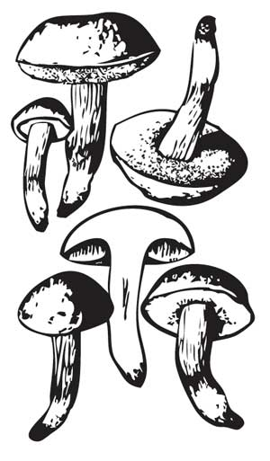
Моховик зеленый.
Моховик пестрый
Растет преимущественно в лиственных и смешанных лесах, встречается с августа по октябрь.
Шляпка диаметром до 10 см, выпуклая, мясистая, сухая, войлочная, светлобурая или коричневая, растрескивающаяся. В трещинах и местах повреждений красноватая. Мякоть рыхлая, желтоватобеловатая, на разрезе слегка синеет, затем краснеет. Трубочки у молодых грибов бледножелтые, у старых зеленоватые, поры широкие, угловатые. Ножка длиной до 9 см, толщиной до 1–1,5 см, ровная, цилиндрическая, иногда суженная книзу, сплошная, светложелтая или желтобурая, иногда красноватая, от нажима синеет.
Съедобен, третьей категории, используется для варки, жарки и маринования, реже для сушки.
Моховик красный
Растет в лиственных лесах и кустарниках, по обочинам дорог и канав в августе – сентябре. Встречается редко.
От предыдущих разновидностей отличается розоватопурпурной окраской шляпки и красноваторозовой окраской нижней части ножки. Трубчатый слой у молодых грибов золотистожелтый, у старых – оливковожелтый, от надавливания синеет.
Съедобен, четвертой категории, используется для варки, жарки, сушки и маринования.
Масленок поздний (настоящий)
Широко распространен, любит светлые места. Растет в сосновом молодняке, на опушках, вдоль дорог и сосновых лесополос, на пожарищах и местах костров, обычно большими группами, встречается с июня по октябрь. Обильно вырастает после теплых дождей. Массовое появление маслят бывает в среднем до трех раз за лето, а в благоприятные годы до 5–7 раз.
Шляпка молодого гриба выпуклая, позднее почти плоская с бугорком в центре, иногда с загнутыми кверху краями, гладкая, в сырую погоду слизистая, в сухую – блестящая. Окраска желтокоричневая или шоколаднобурая, иногда с фиолетовым оттенком. Мякоть у молодых грибов плотная, у старых водянистая, белая или слегка желтоватая, на изломе цвета не меняет.
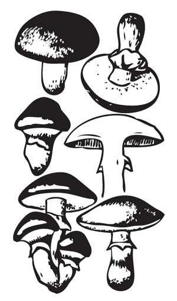
Масленок поздний, настоящий желтый.
Кожица шляпки легко отделяется от мякоти. Запах гриба терпкий, приятный.
Трубчатый слой мелкопористый, кремовый или зеленоватожелтый, у молодых грибов закрыт белой пленкой, во влажную погоду на нем бывают капли белой жидкости. По мере роста гриба пленка отрывается от краев шляпки и образует на ножке кольцо, вначале белое, затем грязнофиолетовое. Ножка цилиндрическая, до 10 см длины и 1–1,5 см толщины, сплошная, над кольцом белая, ниже кольца бледножелтоватая, с мелкими бородавочками.
Съедобен, второй категории, используется для варки, жарки и маринования. Перед приготовлением кожицу со шляпки нужно снять. Для этого грибы в дуршлаге можно опустить на пять минут в кипящую воду, а затем облить холодной водой, и после этого кожица легко снимается. Сушить масленок не рекомендуется, потому что он при сушке теряет вкусовые качества.
Масленок лиственничный
Растет в лиственницах, особенно в молодых посадках, с июля по сентябрь. Встречается обычно группами в пределах корневой системы дерева.
Шляпка мясистая, выпуклая, лимонножелтая, слизистая, в сухую погоду блестящая, до 15 см в диаметре. Трубчатый слой желтоватосерый, прикрыт пленкой, по мере роста гриба образующей кольцо вокруг ножки. Мякоть светложелтая, на изломе не меняет цвет или слегка розовеет.
Ножка цилиндрическая, ровная, до 8 см длины, 1–2 см толщины, над кольцом желтая, ниже кольца буроватая.
Съедобен, второй категории, используется в пищу жареным, вареным, маринованным. Перед употреблением кожица со шляпки удаляется.
Рыжик сосновый
Растет в молодых изреженных сосняках, в сосновых и лиственничных посадках. Встречается часто и в благоприятные годы обильно, с июня по ноябрь, до самых заморозков. Вырастает одиночно, но чаще группами на солнечных, светлых местах.
Шляпка оранжевокрасная, достигающая 12–17 см в диаметре, с концентрическими, более темными оранжевыми полосами, у молодых грибов округловыпуклая, у подросших широковоронковидная, с возрастом выцветает, ее края сначала подвернутые внутрь, затем прямые. Мякоть плотная, мясистая, оранжевая, ломкая, пресная на вкус, на изломе зеленеет. Млечный сок обильный, оранжевожелтый, не едкий, со смолистым запахом, на воздухе зеленеет.
Пластинки приросшие к ножке, желтооранжевые, при надавливании зеленеют. Ножка короткая, цилиндрическая, одного цвета со шляпкой, при повреждении также зеленеет. Мякоть внутри ножки белая.
Съедобен, первой категории. Один из самых вкусных грибов, используется для соления, консервирования, маринования, его можно также варить и жарить. В засоле рыжики сохраняют окраску. Лучше всего их солить холодным способом без вымачивания и промывки. В пищу употребляются и шляпки, и ножки.
Рыжик еловый
Похож на рыжик сосновый, растет в тех же местах и в те же сроки, иногда очень большими колониями. Отличается более бледной и тонкой шляпкой, рыжеватооранжевой или синеватозеленоватой. Круги на шляпке менее заметны.
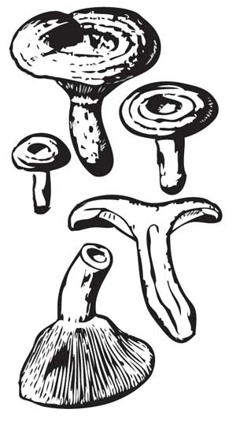
Рыжик.
Мякоть гриба ломкая, рыхлая, млечный сок морковнокрасного цвета. Ножка одного цвета со шляпкой или чуть посветлее.
Съедобен, первой категории. Используется так же, как и рыжик сосновый, в засоле зеленеет.
Груздь настоящий
Растет в березняках и смешанных лесах с примесью березы. Встречается довольно редко, но иногда большими группами, в период с июля по октябрь. Шляпка крупная, до 20 см в диаметре, у молодых грибов белая, округловыпуклая, затем воронковидная с подвернутым вниз мохнатым краем, белая или слегка желтоватая, нередко со слабо заметными водянистыми концентрическими полосами. В сырую погоду она слизистая, за что этот гриб называют «сырым груздем».
Мякоть белая, плотная, ломкая, с пряным запахом. Млечный сок белый, едкий, горький на вкус, на воздухе становится серножелтым.
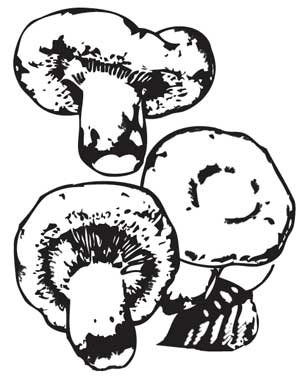
Груздь настоящий.
Пластинки нисходящие по ножке, белые или кремовые, с желтоватым краем, широкие, редкие. Ножка короткая, толстая, голая, белая, иногда с желтоватыми пятнами, у зрелых грибов внутри полая.
Условно съедобен, первой категории. Используется для соления, реже для маринования. Соленые грузди имеют голубоватый оттенок.
Груздь дубовый
Растет под дубом и орешником, на богатых гумусом суглинках в период с июля по октябрь. Довольно редок, хотя в отдельные годы встречается большими группами.
Шляпка мясистая, до 15–17 см в диаметре, у молодого гриба плоскоокруглая, у зрелого воронковидная, иногда неправильной формы, с волнистым, загнутым вниз краем. Поверхность шляпки голая, желтооранжевого цвета, с заметными концентрическими зонами.
Мякоть плотная, белая, желтеющая на разрезе. Млечный сок белый, на воздухе не меняет цвет, на вкус очень горький. Пластинки нисходящие по ножке, сначала белые, затем бледноохристые. Ножка до 10 см длины и 2 см толщины, беловатая с желтоватыми вдавленными пятнами, у взрослых грибов полая.
Условно съедобен, второй категории. Пригоден только для соления.
Груздь черный
Растет в березовых и березовоольховых лесах, преимущественно на светлых, изреженных, мшистых местах, на опушках, вдоль дорог и вырубок.
Довольно редок, но в благоприятные годы встречается большими группами в период с июля по октябрь, до заморозков.
Шляпка мясистая, до 15–17 см в диаметре, плотная, слизистая, у молодых грибов округлая с углублением посередине, со слабо опушенным, подогнутым книзу краем, у старых грибов воронковидная, оливковобурого или оливковочерного цвета, со слабо заметными концентрическими зонами.
Мякоть белая, на изломе буреющая, острого вкуса. Млечный сок белый, жгучеедкий. Пластинки нисходящие по ножке, грязноватобелые или кремовые, позднее желтоватые с мелкими буроватыми пятнами, частые, тонкие. Ножка плотная, у взрослых грибов полая, книзу суженная, буроватозеленоватая с вдавленными пятнами.
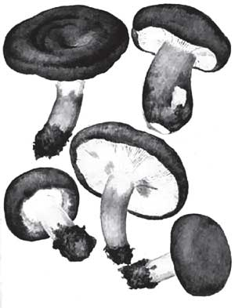
Груздь черный.
Условно съедобен, третьей категории. Используется для соления. В соленом виде приобретает темновишневый или краснофиолетовый цвет.
Скрипица
Растет в березовых и смешанных лесах, реже в хвойных. Встречается с июля по октябрь, часто большими группами. Редко бывает червивым.
Весь гриб молочнобелый, слабо желтеющий с возрастом. Шляпка до 20–25 см в диаметре, сначала плосковыпуклая, вдавленная посередине, с завернутым краем, позднее воронковидная, сухая, бархатистая на ощупь. Мякоть грубая, белая, с обильным жгучеедким соком, на изломе слегка желтеет.
Пластинки нисходящие по ножке, белые или кремовые, редкие. Ножка короткая и толстая, плотная, белая.
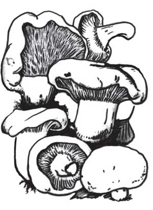
Скрипица.
Гриб условно съедобен, четвертой категории. Используется для солки и квашения. Предварительно его нужно вымачивать и проваривать для удаления горечи.
Волнушка розовая
Растет в лиственных и смешанных лесах, особенно в изреженных хвойноберезовых молодняках. Многочисленный, широко распространенный гриб, появляется с июня по октябрь, причем двумя слоями. Первый слой волнушек обычно приходится на вторую половину июля, второй начинается с конца августа.
Шляпка до 12 см в диаметре, шерстистая, розовая, розовокрасная или оранжеворозовая, с четкими красноватыми концентрическими полосами, у молодого гриба плоская с ямкой в центре, с сильно завернутыми внутрь мохнатыми краями, у зрелого воронковидная, мохнатая по краю, влажная, в сырую погоду слизистая. Мякоть рыхлая, ломкая, розоватая, едкая на вкус. Млечный сок белый, горький.
Пластинки нисходящие по ножке, кремовые или бледнорозовые с желтоватым оттенком, тонкие. Ножка цилиндрическая, ровная или суженная книзу, ломкая, полая, гладкая, бледнорозовая.
Гриб условно съедобен, второй категории, используется для соления и маринования.
Серушка (млечник серый)
Растет в смешанных лесах с березой и осиной, на супесчаных и суглинистых почвах, в сыроватых низменных местах. Встречается с июля по ноябрь, обычно многочисленными группами.
Шляпка серушки сравнительно невелика – 5– 10 см в диаметре, мясистая, плотная, матовая, сухая, у молодых грибов выпуклая с подвернутым краем, у зрелых воронковидная, сероватофиолетового цвета со свинцовым оттенком, с заметными темными концентрическими полосами. Мякоть белая, плотная, млечный сок водянистого или белого цвета, не изменяющийся на воздухе, на вкус очень едкий.
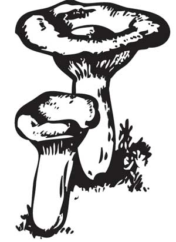
Серушка.
Пластинки нисходящие по ножке, редкие, часто извилистые, бледножелтые. Ножка длиной до 8 см, толщиной до 2 см, светлосерая, иногда вздутая, у зрелых грибов полая.
Условно съедобен, третьей категории, используется для засола.
Подгруздок белый
Растет в лиственных и смешанных лесах, в основном под березами и осинами, нередко большими группами. Встречается с июля по октябрь.
Шляпка до 20 см в диаметре, матовая, белая, сначала выпуклая с загнутыми вниз краями и углублением в центре, затем воронковидная, голая, нередко растрескивающаяся. Мякоть белая, плотная, на изломе не меняет цвет. Млечный сок отсутствует.
Пластинки нисходящие по ножке, частые, тонкие, голубоватобелые. Ножка короткая и толстая, цилиндрическая, гладкая, белая, у зрелых грибов полая.
Условно съедобен, второй категории, используется соленым и маринованным. Солить можно горячим и холодным способом.
Валуй (кулачок, соплюха)
Нередок в лиственных и смешанных лесах с примесью березы. Растет большими группами с июля по ноябрь.
Шляпка до 15 см в диаметре, у молодых грибов круглая, шаровидная, у зрелых плоскораспростертая, похожая на перевернутое чайное блюдце, с рубчатополосатым краем, охристожелтая или желтобурая, в сырую погоду очень слизистая, в сухую – блестящая. Кожица легко отделяется от мякоти. Мякоть плотная, белая, у старых грибов желтоватая, с резким запахом, жгучегорькая на вкус.
Пластинки приросшие, сначала кремовобелые, затем желтые или ржавожелтые с буроватыми пятнами и капельками прозрачной жидкости. Ножка до 10 см длины и до 3 см толщины, иногда утолщенная в средней части, белая, рыхлая, ломкая, полая.
Условно съедобен, третьей категории, используется для засола и маринования. Собирать рекомендуется молодые грибы с нераскрывшейся шляпкой.
Сыроежка зеленоватая
Распространена в лиственных и смешанных лесах, особенно в сосновоберезовых молодняках, на легких песчаных и супесчаных почвах. Встречается часто и в большом количестве с июня по сентябрь.
Шляпка до 10 см в диаметре, сначала выпуклая, затем распростертая, голубоватозеленая или синеватозеленая, иногда буроватая, по краю более светлая, полосатая. Кожица легко сдирается. Мякоть белая, ломкая, пресная или слегка острая на вкус.
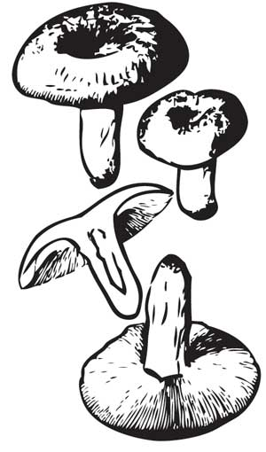
Сыроежка зеленоватая.
Пластинки приросшие к ножке, белые или кремовые, у зрелых грибов с ржавобурыми пятнами. Ножка до 5 см длины и до 2 см толщины, белая, гладкая, цилиндрическая, с продольными морщинами, при надавливании сереет. Съедобна, четвертой категории, используется вареной и жареной, соленой и сушеной.
Сыроежка пищевая
Распространена повсеместно в хвойных и лиственных лесах. Встречается с июля по сентябрь, одиночно и группами.
Шляпка до 10 см в диаметре, плосковыпуклая, мясистая, сухая, белорозовая или бордовокрасная, с крупными белыми пятнами. Кожица не доходит до края на 1–2 см, не сдирается или сдирается плохо. Мякоть белая, плотная, не горькая.
Пластинки частые, белые, иногда чуть желтоватые по краю, немного выступают изпод шляпки. Ножка короткая и толстая, цилиндрическая, сплошная, морщинистая, белая.
Съедобна, третьей категории, используется для варки и жарки, для засола. Перед засолом грибы лучше ошпарить кипятком, чтобы они не крошились.
Сыроежка золотистокрасная
Встречается в лиственных и хвойных лесах, одиночно и небольшими группами. Плодоносит в июле – августе.
Шляпка до 13 см в диаметре, сначала выпуклая, затем распростертая, оранжевокрасная, оранжевожелтая или киноварнокрасная с желтыми пятнами, с ребристым краем. Мякоть белая, под кожицей яркожелтая, пресная на вкус, без ярко выраженного запаха.
Пластинки бледноохристые с желтым краем. Ножка до 10 см длины и до 3 см толщины, бледножелтая или яркожелтая.
Съедобна, третьей категории, используется вареной, жареной, а также для солки.
Вешенка обыкновенная
Растет на пнях, стволах, на живых ослабленных и сухостойных деревьях различных лиственных пород. Плодоносит с июня до осенних морозов, часто очень большими колониями, срастаясь ножками в пучки.
Шляпка боковая, полукруглая, уховидная или раковинообразная, у молодых грибов с загнутым вниз краем, до 20 см по наибольшему диаметру, тонкомясистая, гладкая, сероватожелтоватая или буроватая, выцветающая до белой. Мякоть белая, мягкая, запах грибной, приятный.
Пластинки нисходящие по ножке, редкие, толстые, белые, желтеющие с возрастом, около ножки с перемычками.
Ножка короткая, до 4 см длины и 2 см толщины, скошенная вбок, суженная книзу, в основании волосистая.
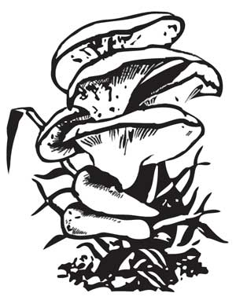
Вешенка обыкновенная.
Молодой гриб съедобен, четвертой категории. Используется для супов и жарения, в пироги, соленым и маринованным. Можно использовать для приготовления грибного экстракта.
Опенок осенний (настоящий)
Растет на пнях, на живых и валежных стволах, корневых лапах лиственных и хвойных деревьев. Появляется в конце августа или в начале сентября и плодоносит до устойчивых осенних морозов, большими колониями.
Шляпка до 10–15 см в диаметре, вначале выпуклая, почти шаровидная, затем плоская, с бугорком в центре. Края шляпки сначала завернуты внутрь, затем расправляются наподобие зонтика. Кожица буроватая, серокоричневая или желтокоричневая, чешуйчатая, в центре более темная. Мякоть тонкомясистая, белая, с приятным грибным запахом.
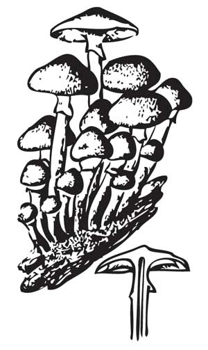
Опенок настоящий.
Пластинки нисходящие, желтоватобелые, у старых грибов с ржавыми пятнами. Ножка до 15 см длины и 1,5 см толщины, цилиндрическая, с перепончатым кольцом в верхней части, упругая, под шляпкой светлая, в нижней части коричневатая.
Общеизвестный съедобный гриб третьей категории. Используются только шляпки в вареном, жареном, соленом, маринованном и сушеном виде. Солить можно только после отваривания. Из размолотых пучков грибницы осеннего опенка изготовляют белковый хлеб для диабетиков.
Говорушка серая
Растет в хвойных и смешанных лесах, особенно в сосновых и еловых молодняках, в садах. Появляется в августе – сентябре, группами, иногда образует «ведьмины круги».
Шляпка до 10–20 см в диаметре, мясистая, выпуклая с подвернутым вниз краем, затем выпуклораспростертая, с утолщенным центром, серая, по краям более светлая, гладкая, сухая. Мякоть белая, плотная, толстая, приятная на вкус и запах.
Пластинки частые, нисходящие по ножке или приросшие к ней, вначале беловатые, затем желтоватые. Ножка до 12 см длины и до 3 см толщины, в основании толщенная, плотная, вначале беловатая, затем сероватая, у молодых грибов сплошная, у старых с полостью внутри.
Малоизвестный условно съедобный гриб четвертой категории. Используется вареным, жареным, соленым, маринованным. Пригоден для сушки.
Опенок зимний
Растет большими тесными группами на отмирающих деревьях и пнях различных лиственных пород. Встречается на вязе, ильме, реже на иве, тополе, осине, липе. Плодоносит обычно поздней осенью, в конце сентября или в начале октября. Растет даже после выпадения снега, до устойчивых морозов.
Шляпка небольшая, от 2 до 10 см в диаметре, медовожелтого или ржавожелтого цвета, в центре более темная, буроватая, тонкомясистая, голая, гладкая, липкая, при подсыхании блестящая, у молодого гриба плосковыпуклая, у зрелого – почти плоская. Мякоть желтоватая или кремовая, слегка водянистая, с приятом вкусом и запахом.
Пластинки светложелтые или кремовые, с возрастом темнеющие, редкие, широкие, слабо прикрепленные к ножке. Ножка цилиндрическая, до 10 см длины и до 1 см толщины, упругая, плотная, внизу бархатистая, темнокоричневая до черного, вверху светлая, желтоватая.
Малоизвестный съедобный гриб четвертой категории. Используются шляпки и верхние части ножек молодых грибов в жареном, вареном, сушеном, маринованном и соленом виде.
Опенок зимний можно выращивать искусственно на древесине или опилках.
Грибзонтик пестрый
Растет на песчаных и известковых почвах в изреженных лесах и кустарниках, на лесных опушках, полянах, вырубках, вдоль дорог, в садах и парках, иногда образует «ведьмины кольца». Появляется с августа по сентябрь.
Шляпка достигает 30 см в диаметре, у молодых грибов яйцевидноокруглая, затем колокольчатая, а у зрелых грибов распростертая, словно зонтик (отсюда и название гриба), в центре с бугорком, беловатая, сероватая или серобурая, в середине более темная, с крупными, мягкими коричневобурыми чешуйками, легко отделяющимися от кожицы. Мякоть белая, рыхлая, толстая, на изломе не изменяется, без особого запаха, с приятным вкусом.
Пластинки свободные, отделены от ножки воротничком, белые или бледнокремовые, с возрастом слегка краснеющие, частые, широкие, с ровным краем. Ножка до 35 см длины и до 3 см толщины, с клубневидным основанием, светлобуроватая с темнобурыми волокнистыми чешуйками, с подвижным широким, беловатым, отстающим двойным кольцом.
Малоизвестный съедобный гриб четвертой категории. Используется в молодом возрасте, пока шляпка сохраняет яйцевидную форму. Его можно варить, жарить и сушить для приготовления грибного порошка.
Грибзонтик белый (полевой)
Растет на лесных полянах, вдоль дорог, в старых парках, на лугах, пастбищах с июля по сентябрь. Встречается небольшими группами.
Шляпка до 10 см в диаметре, белая, в центре буроватая, мелкочешуйчатая, с растрескивающейся кожицей, сначала округлая, затем постепенно раскрывается до зонтиковидной, хлопьевидноопушенная по краю. Мякоть тонкая, белая, мягкая, с приятным запахом и вкусом, на изломе не меняет цвет.
Пластинки свободные, белые или кремовые, частые, с ровным краем, образуют вокруг ножки хрящевидный воротничок. Ножка до 10 см длины и до 1 см толщины, белая или буроватая, с подвижным белым кольцом, клубневидная в основании.
Малоизвестный съедобный гриб четвертой категории. Используется вареным, жареным и сушеным.
Шампиньон обыкновенный
Растет на богатой перегноем почве в хвойных и лиственных лесах, на полянах, на лугах, выгонах, огородах, в парниках, теплицах, в садах, парках, у дорог. Встречается обычно группами, иногда очень большими, с мая по ноябрь.
Шляпка до 15 см в диаметре, у молодых грибов полушаровидная с загнутым вниз краем, у зрелых – выпуклораспростертая. Кожица белая или кремовобелая, с возрастом становится светлоохристой, сухая, гладкая или с мелкими буроватыми чешуйками в серединной части, при надавливании желтеет. По краю могут сохраняться остатки покрывала. Мякоть белая, плотная, на изломе, охристая, с приятным грибным запахом.
Пластинки свободные, не прикрепленные к ножке, сначала белые, затем розоватые, сероватофиолетовые, а у старых грибов темнокоричневые, почти черные.
Ножка до 10 см длины и до 2 см толщины, прямая или слегка утолщенная к основанию, белая, волокнистая, у старых грибов иногда полая. Кольцо однослойное, расположено чуть выше середины ножки.
Гриб съедобный, второй категории. Используется без отваривания жареным, тушеным, в супах, соусах. Можно мариновать и сушить.
Шампиньон обыкновенный похож на бледную поганку, его можно отличить от нее по отсутствию мешковидного «котелка» у основания ножки и по розовым пластинкам (у бледной поганки они белые).
Шампиньон луговой
Растет на пастбищах, лесных полянах, в садах и парках с мая до ноября. Нередко встречается большими группами.
Шляпка до 20 см в диаметре, у молодых грибов полукруглая или округлоколокольчатая с завернутым краем, у старых выпуклораспростертая, белая или чуть буроватая, от прикосновения желтеющая, сначала хлопьевидномучнистая, затем шелковистая или чешуйчатая, сухая, иногда с остатками покрывала по краю. Мякоть белая, на изломе розовеет, затем темнеет, с приятным запахом и вкусом.
Пластинки свободные, у молодых белые, у зрелых красноватые, шоколаднобурые, черные. Ножка до 10 см длины и до 3 см толщины, утолщенная к основанию, белая, позднее желтеющая, волокнистая, сплошная, с широким, белым перепончатым кольцом, расположенным на середине ножки.
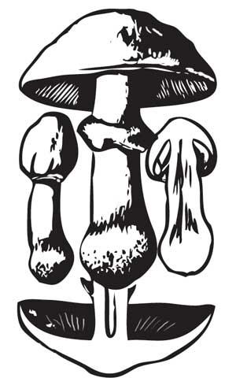
Шампиньон луговой.
Гриб съедобен, третьей категории. Используется так же, как и шампиньон обыкновенный.
Ложноопенок Кандоля (псатирелла Кандоля)
Растет на земле, на трухлявых пнях, на сухой и обработанной древесине лиственных пород, реже на живых лиственных деревьях. Встречается в садах, в парках, вдоль дорог, обычно большими группами, с мая по октябрь.
Шляпка до 7 см в диаметре, тонкая, немного водянистая, сначала колокольчатая, затем округлораспростертая с бугорком в центре, растрескивающаяся. Цвет шляпки беловатый, буроватый или охристокремовый, край волнистый, часто с белыми, свисающими остатками покрывала. Мякоть тонкая, белая, ломкая, с приятным вкусом, без особого запаха.
Пластинки сначала сероваторозовые или серофиолетовые с более светлым краем, позднее темнокоричневые. Ножка до 10 см длины и до 0,8 см толщины, часто изогнутая, полая, цилиндрическая, волокнистая, слегка утолщенная в нижней части, белая или кремовая, сверху пушистая, без кольца.
Гриб съедобен. Используется вареным и жареным.
Лисичка настоящая
Широко распространена в смешанных и хвойных лесах, преимущественно сосновых, очень любит зеленый мох. Растет, как правило, большими скоплениями, почти не бывает червивой. Встречается с июля по октябрь.
Весь гриб яичножелтой или бледнооранжевой, выцветающей с возрастом окраски. Шляпка до 8 см в диаметре, мясистая, плотная, у молодых грибов выпуклая или плоская, с завернутым краем, у зрелых воронковидная, с сильно волнистым краем. Мякоть гриба желтоватая, сухая, плотная, резиновоупругая, приятная на вкус и запах.
Пластинки складчатые, нисходящие далеко на ножку, разветвленные, толстые, редкие. Ножка плавно расширяется кверху, без различимой границы переходя в шляпку, плотная, желтая, гладкая, до 7 см длины и 3 см толщины, цилиндрическая, сплошная.
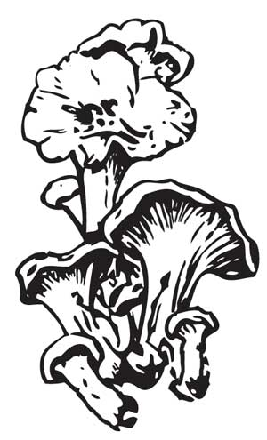
Лисичка настоящая.
Гриб съедобен, третьей категории. Идет в государственные заготовки для консервирования. Используется без предварительной обработки вареным и жареным. Впрок заготавливается в виде отварных консервов (в банках), а также может идти на маринование и засолку (горячим способом).
По содержанию каротина лисичка превосходит все общеизвестные грибы. Кроме каротина, этот гриб содержит много других витаминов и обладает антибактериальными свойствами. В некоторых странах лисичку используют для профилактики раковых заболеваний.
Дождевик гигантский (лангерманния гигантская)
Растет в лиственных и смешанных лесах, на полях, лугах, пастбищах. Встречается часто, но не обильно, с августа по октябрь.
Плодовое тело шаровидное или яйцевидное, немного приплюснутое, до 50 см в поперечнике. Наружная оболочка очень тонкая, мягкая, гладкая или хлопьевидная, белого или желтоватого цвета, у старых грибов коричневая, напоминает бумагу.
Мякоть гриба сначала белая, потом зеленоватожелтая, а в старых грибах оливковокоричневая. Молодой гриб с чистобелой мякотью съедобен. Используется вареным и жареным, пригоден для сушки.
Трюфель белый
Растет в лиственных, хвойных и смешанных лесах, на умеренно влажных, хорошо прогреваемых почвах со слабо развитым травянистым покровом, в августе – сентябре. Плодовые тела этого гриба расположены под землей, на глубине 8–10 см, на поверхности почвы они появляются очень редко, поэтому обнаружить их трудно. Об их присутствии можно догадаться по едва заметным бугоркам, обычно голым, без растительности. Ищут трюфели с помощью дрессированных собак или свиней.
Плодовое тело трюфеля похоже на клубень картофеля, достигает 500 г и более. Молодой гриб покрыт гладкой кожицей беловатого цвета. С возрастом приобретает светлобурую окраску с желтизной, на поверхности появляются складки, трещины и редкие бугорки.
Мякоть гриба суховатая, на разрезе вначале белая, затем сероватобелая, мраморная с желтоватобурыми извилистыми прожилками. У молодого гриба сильный и приятный запах.
Трюфели используют в пишу жареными и вареными, сушат и консервируют. Благодаря аромату и хорошему вкусу они особенно хороши в супах, соусах, начинках и приправах. Они хорошо сохраняются свежими, примерно в течение месяца, если их прикопать в землю в подвале или подполье.
Сморчок настоящий
Ранневесенний гриб, появляющийся в конце апреля – начале мая в лиственных, хвойных и смешанных лесах на плодородных почвах, богатых перегноем и известью. Часто встречается на пожарищах, на песчаных и мшистых местах, на лесных опушках, в междурядьях посадок, вдоль дорог, канав, на вырубках.
Шляпка охристожелтая, желтобурая или светлокоричневая, яйцевидная, с округлыми или многоугольными, похожими на соты ячейками, по краю приросшая к ножке. Пластинок у сморчка нет. Мякоть восковидная, белая, нежная, ломкая, с приятным запахом и вкусом.
Ножка до 8 см длины и до 2 см толщины, цилиндрическая, внизу немного расширенная, пустотелая, беловатая, желтоватая или буроватая.
Гриб условно съедобен, но очень вкусный. Его можно варить, жарить, тушить, заготавливать впрок сушеным.
Сморчки содержат ядовитое вещество – гельвелловую кислоту. Перед приготовлением их необходимо прокипятить в воде в течение 5–10 минут, отвар слить, грибы отжать и несколько раз промыть в горячей воде. После этого сморчки становятся совершенно безвредными, потому что гельвелловая кислота хорошо растворяется в горячей воде. При сушке ядовитые вещества также исчезают. Однако сушеные грибы рекомендуется употреблять в пищу не раньше, чем через 3–4 недели сушки.
Количество ядовитых веществ, накапливаемых сморчками, зависит от местности и погодных условий. Грибы могут содержать и мало, и много яда, поэтому их не рекомендуется есть больше 200 г в день.